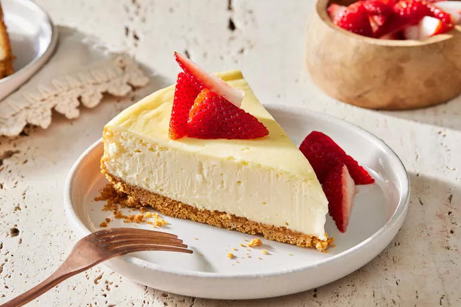

Philadelphia Cheesecake Recipe

Description
This iconic Philadelphia cheesecake is simple yet sure to make a statement at the potluck.
- 1 1/2 cups Honey Maid Graham Cracker Crumbs
- 1/2 cup butter, melted
- 3 tablespoons sugar
- 4 (8 ounce) packages Philadelphia Cream Cheese, softened
- 1 cup sugar
- 1 teaspoon vanilla
- 4 large eggs
- Gather all ingredients. Preheat the oven to 325 degrees F (165 degrees C).
- Mix crumbs, butter, and 3 tablespoons sugar until combined; press firmly onto the bottom of a 9-inch nonstick springform pan.
- Beat cream cheese, 1 cup sugar, and vanilla in a mixing bowl until smooth.
- Add eggs, one at a time, mixing on low speed until just blended. Pour over crust.
- Bake in the preheated oven until center is almost set, about 45 to 55 minutes.
- Loosen cake from the pan rim; cool before removing rim.
- Refrigerate for 4 hours before serving!